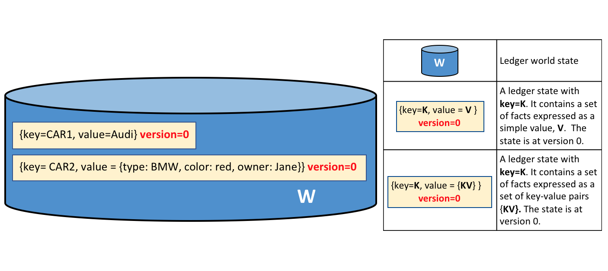

Ledger¶
受众：架构师、应用程序开发者和智能合约开发者、管理员
账本是超级账本Fabric中的一个重要概念;它存储有关业务对象的重要事实信息;包括对象属性的当前值，和产生这些当前值的交易的历史。
在这个主题中，我们将涉及:
What is a Ledger?¶
账本包含业务的当前状态，就像一个交易日记账。欧洲和中国最早的账本可以追溯到近1000年前，苏美尔人在4000年前就有了石制账本——但让我们从一个更现代的例子开始吧!
你可能已经习惯查看你的银行账户了。对你来说，最重要的是可用的余额——它是你现在能花多少钱。如果你想知道你的余额是如何产生的，那么你可以查看决定它的交易贷项和借项。这是一个真实的账本示例——一个状态(您的银行余额)和一组确定账本的有序交易(贷记和借记)。超级账本Fabric的动机是出于这两个相同的考虑——显示一组账本状态的当前值，以及捕获决定这些状态的交易历史。
Ledgers, Facts and States¶
账本并不真正地存储业务对象，而是存储关于这些对象的事实。当我们说“我们在账本中存储一个业务对象”时，我们真正的意思是我们正在记录关于一个对象当前状态的事实，以及关于导致当前状态的交易历史的事实。在一个日益数字化的世界里，我们感觉自己在看一个物体，而不是关于一个物体的事实。对于数字对象，它很可能存在于外部数据存储中;我们存储在账本中的事实使我们能够确定它的位置以及有关它的其他关键信息。
虽然关于业务对象当前状态的事实可能会更改，但是关于它的事实历史是不可变的，可以将其添加到其中，但不能对其进行回溯性更改。我们将看到，将区块链看作业务对象事实的不可变历史，是如何理解它的一种简单而强大的方法。
现在让我们仔细看看超级账本Fabric的账本结构!
The Ledger¶
在超级账本Fabric中，账本由两个不同但相关的部分组成——一个世界状态和一个区块链。每一个都表示一组关于一组业务对象的事实。
首先，有一个世界状态——一个数据库，其中包含一组账本状态的当前值的缓存。世界状态使程序可以很容易地直接访问状态的当前值，而不必遍历整个交易日志来计算它。缺省情况下，账本状态表示为键值对，稍后我们将看到超级账本Fabric如何在这方面提供灵活性。世界状态可以频繁地更改，因为可以创建、更新和删除状态。
其次，还有一个区块链——一个交易日志，记录导致当前世界状态的所有更改。交易收集在附加到区块链的区块中——使您能够了解导致当前世界状态的更改的历史。区块链数据结构与世界状态非常不同，因为一旦写入，就无法修改;它是不可变的。
 ledger.ledger A Ledger L comprises blockchain B and
world state W, where blockchain B determines world state W. We can also say that
world state W is derived from blockchain B.
ledger.ledger A Ledger L comprises blockchain B and
world state W, where blockchain B determines world state W. We can also say that
world state W is derived from blockchain B.
在一个超级账本Fabric网络中有一个逻辑账本是很有帮助的。实际上，该网络维护一个账本的多个副本——通过一个称为“共识”的过程，这些副本与其他副本保持一致。分布式账本技术(DLT)这个术语经常与这种账本联系在一起——这种账本在逻辑上是单一的，但是在整个网络中分布着许多一致的副本。
现在让我们更详细地研究世界状态和区块链数据结构。
World State¶
世界状态将业务对象属性的当前值保存为唯一的账本状态。这很有用，因为程序通常需要对象的当前值;遍历整个区块链来计算对象的当前值将会很麻烦——您只需要直接从世界状态获取它。
ledger.worldstate A ledger world state containing two states. The first state is: key=CAR1 and value=Audi. The second state has a more complex value: key=CAR2 and value={model:BMW, color=red, owner=Jane}. Both states are at version 0.
账本状态记录一组关于特定业务对象的事实。我们的示例显示了CAR1和CAR2这两辆车的账本状态，每辆车都有一个键和一个值。应用程序可以调用智能合约，该合约使用简单的账本API来获取、设置和删除状态。注意状态值可以是简单的(奥迪…)，也可以是复合的(类型:BMW…)。通常查询世界状态来检索具有特定属性的对象，例如查找所有红色宝马。
世界状态作为数据库实现。这很有意义，因为数据库提供了一组丰富的操作符来有效地存储和检索状态。稍后我们将看到，可以将超级账本Fabric配置为使用不同的世界状态数据库来满足不同类型的状态值和应用程序(例如在复杂查询中)所需的访问模式的需要。
应用程序提交的交易捕获对世界状态的更改，这些交易最终提交到账本区块链。应用程序通过超级账本Fabric SDK与这种共识机制的细节隔离;它们仅仅调用一个智能合约，当交易被包含在区块链中时(无论是否有效)，它们都会得到通知。关键的设计要点是，只有由一组必需的背书组织签名的交易才会导致对世界状态的更新。如果一个交易没有足够的背书者签名，它将不会导致世界状态的改变。您可以阅读更多关于应用程序如何使用智能合约以及如何开发应用程序的信息。
您还会注意到，状态有一个版本号，在上面的图表中，状态CAR1和CAR2处于它们的初始版本0。用于内部使用的版本号，并在每次状态更改时递增。每当更新状态时，都会检查版本，以确保当前状态与背书时的版本匹配。这就确保了世界状态正在按照预期发生变化;没有并发更新。
最后，当第一次创建账本时，世界状态为空。因为表示对世界状态的有效更改的任何交易都记录在区块链上，这意味着可以随时从区块链重新生成世界状态。这非常方便——例如，创建peer时自动生成世界状态。此外，如果某个peer异常失败，则可以在peer重新启动时(在接受交易之前)重新生成世界状态。
Blockchain¶
现在让我们把注意力从世界状态转移到区块链。虽然世界状态包含一组与一组业务对象的当前状态相关的事实，但是区块链是关于这些对象如何达到其当前状态的事实的历史记录。区块链记录了每个账本状态的每个以前版本以及它是如何被更改的。
区块链结构为相互链接的区块的顺序日志，其中每个区块包含一系列交易，每个交易表示对世界状态的查询或更新。其他地方讨论了交易的确切排序机制;重要的是，区块排序，以及区块内的交易排序，是在称为排序服务的超超级账本Fabric组件首次创建区块时建立的。
每个区块的头部包含区块交易的散列，以及前一个区块的头部散列的副本。这样，账本上的所有交易都按顺序排列，并以密码方式连接在一起。这种散列和链接使账本数据非常安全。即使一个承载账本的节点被篡改了，它也不能让所有其他节点相信它拥有“正确的”区块链，因为账本分布在一个由独立节点组成的网络中。
与使用数据库的世界状态相反，区块链始终作为文件实现。这是一个明智的设计选择，因为区块链数据结构严重偏向于非常小的一组简单操作。附加到区块链末尾的操作是主要操作，查询目前是一个相对不频繁的操作。
让我们更详细地看看区块链的结构。
 ledger.blockchain A blockchain B containing blocks
B0, B1, B2, B3. B0 is the first block in the blockchain, the genesis block.
ledger.blockchain A blockchain B containing blocks
B0, B1, B2, B3. B0 is the first block in the blockchain, the genesis block.
在上面的图中，我们可以看到B2区块有一个区块数据D2，它包含所有的交易:T5、T6、T7。
最重要的是，B2有一个区块头部H2，它包含D2中所有交易的加密散列，以及与前一个区块B1相同的散列。通过这种方式，区块之间不可分割地、不可改变地链接在一起，术语区块链很好地捕捉到了这一点!
最后，如图所示，区块链中的第一个区块称为创世区块。它是账本的起点，尽管它不包含任何用户交易。相反，它包含一个配置交易，其中包含网络通道的初始状态(未显示)。在文档中讨论区块链网络和通道时，我们将更详细地讨论创世区块。
Blocks¶
让我们仔细看看一个区块的结构。它由三个部分组成
Block Header
This section comprises three fields, written when a block is created.
Block number: An integer starting at 0 (the genesis block), and increased by 1 for every new block appended to the blockchain.
Current Block Hash: The hash of all the transactions contained in the current block.
Previous Block Hash: A copy of the hash from the previous block in the blockchain.
These fields are internally derived by cryptographically hashing the block data. They ensure that each and every block is inextricably linked to its neighbour, leading to an immutable ledger.
 ledger.blocks Block header details. The header H2
of block B2 consists of block number 2, the hash CH2 of the current block data
D2, and a copy of a hash PH1 from the previous block, block number 1.
ledger.blocks Block header details. The header H2
of block B2 consists of block number 2, the hash CH2 of the current block data
D2, and a copy of a hash PH1 from the previous block, block number 1.Block Data
This section contains a list of transactions arranged in order. It is written when the block is created by the ordering service. These transactions have a rich but straightforward structure, which we describe later in this topic.
Block Metadata
This section contains the time when the block was written, as well as the certificate, public key and signature of the block writer. Subsequently, the block committer also adds a valid/invalid indicator for every transaction, though this information is not included in the hash, as that is created when the block is created.
Transactions¶
正如我们所看到的，交易捕获对世界状态的更改。让我们来看看包含在一个区块中的交易的详细区块数据结构。
 ledger.transaction Transaction details. Transaction
T4 in blockdata D1 of block B1 consists of transaction header, H4, a transaction
signature, S4, a transaction proposal P4, a transaction response, R4, and a list
of endorsements, E4.
ledger.transaction Transaction details. Transaction
T4 in blockdata D1 of block B1 consists of transaction header, H4, a transaction
signature, S4, a transaction proposal P4, a transaction response, R4, and a list
of endorsements, E4.
在上面的例子中，我们可以看到以下字段:
Header
This section, illustrated by H4, captures some essential metadata about the transaction – for example, the name of the relevant chaincode, and its version.
Signature
This section, illustrated by S4, contains a cryptographic signature, created by the client application. This field is used to check that the transaction details have not been tampered with, as it requires the application’s private key to generate it.
Proposal
This field, illustrated by P4, encodes the input parameters supplied by an application to the smart contract which creates the proposed ledger update. When the smart contract runs, this proposal provides a set of input parameters, which, in combination with the current world state, determines the new world state.
Response
This section, illustrated by R4, captures the before and after values of the world state, as a Read Write set (RW-set). It’s the output of a smart contract, and if the transaction is successfully validated, it will be applied to the ledger to update the world state.
Endorsements
As shown in E4, this is a list of signed transaction responses from each required organization sufficient to satisfy the endorsement policy. You’ll notice that, whereas only one transaction response is included in the transaction, there are multiple endorsements. That’s because each endorsement effectively encodes its organization’s particular transaction response – meaning that there’s no need to include any transaction response that doesn’t match sufficient endorsements as it will be rejected as invalid, and not update the world state.
这就总结了交易的主要领域——还有其他领域，但是这些是您需要了解的基本领域，以便对账本数据结构有一个坚实的了解。
World State database options¶
世界状态被物理地实现为一个数据库，以提供简单而有效的账本状态存储和检索。正如我们所看到的，账本状态可以有简单的值，也可以有复合的值，为了适应这一点，世界状态数据库的实现可以有所不同，从而允许这些值得到有效的实现。目前，世界状态数据库的选项包括LevelDB和CouchDB。
LevelDB是默认值，当账本状态是简单的键值对时，它尤其适用。LevelDB数据库与网络节点紧密地共存——它嵌入在相同的操作系统进程中。
当账本状态结构为JSON文档时，CouchDB是一个特别合适的选择，因为CouchDB支持在业务交易中经常看到的丰富的查询和更新数据类型。在实现方面，CouchDB运行在单独的操作系统进程中，但是peer节点和CouchDB实例之间仍然存在1:1的关系。所有这些都是智能合约所看不到的。有关CouchDB的更多信息，请参见CouchDB作为状态数据库。
在LevelDB和CouchDB中，我们看到了超级账本Fabric的一个重要方面——它是可插入的。世界状态数据库可以是关系数据存储、图形存储或时态数据库。这为可以有效访问的账本状态类型提供了极大的灵活性，允许超级账本Fabric处理许多不同类型的问题。
Example Ledger: fabcar¶
当我们结束关于账本的话题时，让我们来看一个账本示例。如果您已经运行了fabcar示例应用程序，那么您已经创建了这个账本。
fabcar样例应用程序创建一组10辆车，每辆车都有一个唯一的标识;不同的颜色，不同的款式，不同的主人。以下是前四辆车创建后的账本。
 ledger.transaction The ledger, L, comprises a world
state, W and a blockchain, B. W contains four states with keys: CAR1, CAR2, CAR3
and CAR4. B contains two blocks, 0 and 1. Block 1 contains four transactions:
T1, T2, T3, T4.
ledger.transaction The ledger, L, comprises a world
state, W and a blockchain, B. W contains four states with keys: CAR1, CAR2, CAR3
and CAR4. B contains two blocks, 0 and 1. Block 1 contains four transactions:
T1, T2, T3, T4.
我们可以看到世界状态包含对应于CAR0 CAR1 CAR2 CAR3的状态。CAR0的值表明这是一辆蓝色的丰田普锐斯，目前归Tomoko所有，我们可以看到其他车的状态和值类似。此外，我们可以看到所有car状态的版本号都是0，这表示这是它们的初始版本号——自创建以来，它们一直没有更新。
我们还可以看到区块链包含两个区块。区块0是创世区块，尽管它不包含任何与汽车相关的交易。然而，第1区块包含交易T1、T2、T3、T4，这些交易对应于为世界状态中的CAR0到CAR3创建初始状态的交易。我们可以看到区块1与区块0相连。
我们还没有显示区块或交易中的其他字段，特别是头部和散列。如果您对这些细节感兴趣，可以在文档的其他地方找到专门的参考主题。它为您提供了一个完整的工作示例，其中详细介绍了整个区块及其交易——但是现在，您已经对超级账本Fabric账本有了一个坚实的概念理解。做得好!
Namespaces¶
虽然我们把账本描述成一个单一的世界状态和单一的区块链，但这有点过于简单化了。实际上，每个链码都有自己的世界状态，与所有其他链码分离。世界状态位于一个名称空间中，因此只有同一链码中的智能合约才能访问给定的名称空间。
区块链没有名称空间。它包含来自许多不同智能合约名称空间的交易。您可以在本主题中阅读更多关于链码名称空间的信息。
现在让我们看看名称空间的概念是如何应用于超级账本Fabric通道中的。
Channels¶
在超级账本Fabric中，每个通道都有一个完全独立的账本。这意味着完全独立的区块链和完全独立的世界状态，包括名称空间。应用程序和智能合约可以在通道之间通信，以便在通道之间访问账本信息。
在本主题中，您可以阅读更多关于账本如何与通道一起工作的信息。
More information¶
要深入了解交易流程、并发控制和世界状态数据库，请将交易流程、读写集语义和CouchDB作为状态数据库主题。